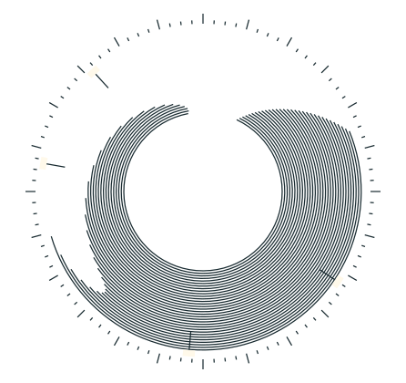
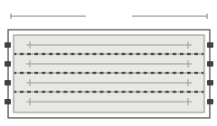
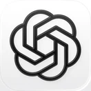

健身页
1,000 m更少的软件，更容易坚持
生活里的事都从同一个入口记下。
省去挑应用、找入口的步骤，
想记的时候就能记。

24HOURS集中记录
生活里的事都从同一个入口记下。
省去挑应用、找入口的步骤，
想记的时候就能记。
不用再回想一条记录存在哪款应用。
按日期或关键词查找，就能回到原文，
核对当时的细节。
把零散的日子放回同一条时间线。
回顾一周、一个月，就能看见哪些事
一直在做，哪些习惯正在改变。
功能模块
每个模块都有独立页面。选择要用的几项，它们就会出现在你的工作台。
习惯打卡、连续天数、周期回顾
项目目标、里程碑、阶段进度
消费记录、消费概览
日常随笔、心情记录、往日回顾
模块联动
待办、健身、收支各有自己的页面，也能围绕同一件事一起回看。
周三 19:00

生活总览
打开首页，就能看到已启用模块的近况。先看这一周，再进入某一项的明细。
With AI
支持 MCP 的 AI 可以通过在侧的接口，读写你授权的记录。查开销时不用贴账单，商量好的安排也能直接写进待办。
午饭花了 32 元，帮我「记一笔」。
这周午餐一共花了多少？
再帮我把「周五带饭」加入待办

ChatGPT图中六款 AI 为使用场景示例，实际接入方式取决于客户端。
定价
套餐与价格待公布。
桌面端和移动端在后续规划中。
可以先从今天的一条记录开始。
历史数据导入方式将随支持的来源公布。
工作台保留模块页面，可直接查看、修改记录。
重复操作适合用界面，跨模块的问题可以问 AI。
MCP 接入按模块授权，具体范围将在接入时说明。
撤销、导出和删除方式将在开放前公布。